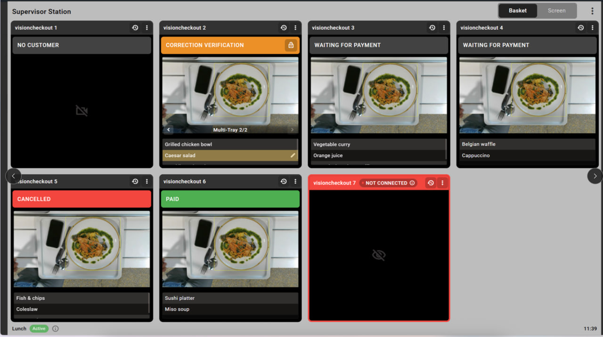
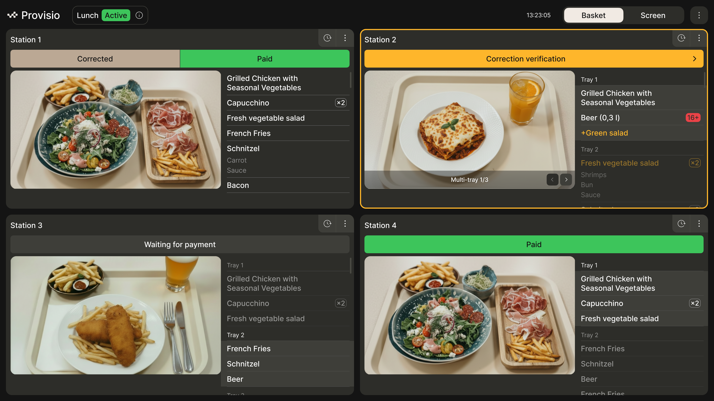
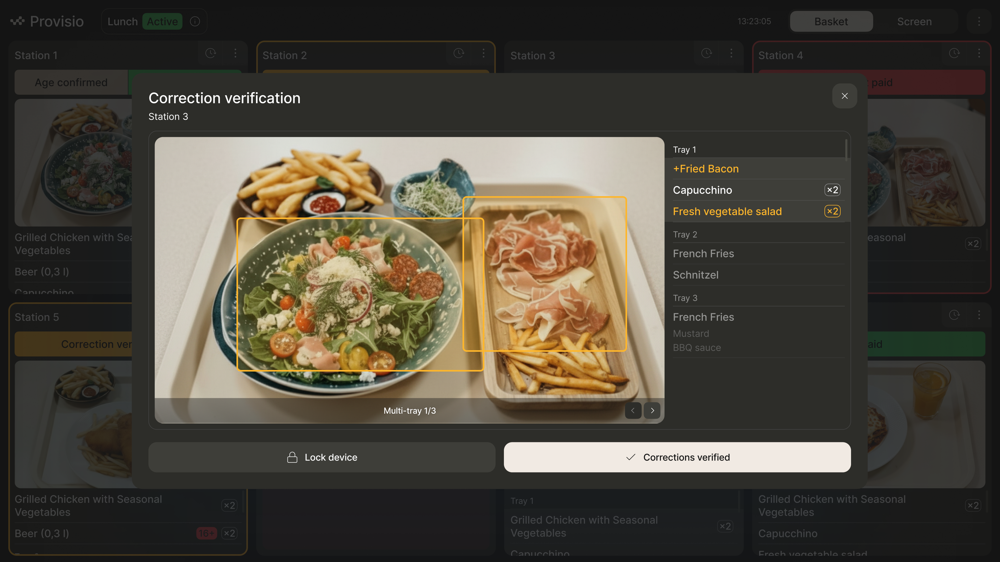

О проекте
Станции самообслуживания работают в точках общественного питания. Они позволяют покупать обеды не обращаясь к кассиру, просто нужно отсканировать свой поднос с едой и система сама сформирует чек. За всеми станциями наблюдает ответственный работник. Работнику на экран выводятся live view записи, работник может смотреть, что происходит, корректировать если необходимо, изменять количество позиций, подтверждать возраст, если товар с ограничениями по возрасту и т.д.
Задача состоит в редизайне этих экранов так, чтобы они решали проблемы доступности для людей пожилого возраста, но при этом необходимо чтобы все экраны станций могли уместить на один экран и за ними можно было наблюдать одновременно.
Ограничение - возраст сотрудников и количество касс - от 1 до 8, все кассы должны быть видны в один момент на одном экране, важно видеть как можно больше контент без скролла.
Анализ проблемы
В текущей версии экрана я определила следующите точки роста:
- Устаревший дизайн, не соответствующий гайдлайнам.
- Содержание заказа не умещается в карточке, необходимо пролистывать.
- Мелкие шрифты и элементы, не удобные для чтения пользователям старшего поколения.

User story
Я, как сотрудник охраны,
- хочу видеть заметные состояния ошибки и предупреждения.
- хочу видеть состав заказа на каждой станции.
- хочу видеть, какие позиции в заказе были изменены или требуют подтверждения.
Гипотезы
- Если я увеличу размер экранов станций это ускорит реакцию пользователей на 5%.
- Если я сделаю фильтры для просмотра только состояний предупреждения это ускорит реакцию пользователей на 10%.
- Если я добавлю экран подтверждения изменений с подробным описанием заказа это уменьшит количество ошибок на 10%.
- Если я добавлю кнопки подтверждения изменения это ускорит действия пользователей на 15%.
Первая итерация
В этой версии я сохранила структуру экрана, сделала небольшие теги, которые не занимают много места. Так как наблюдающему важно видеть экраны, где произошла нестандартная ситуация и быстро отреагировать, я предположила, что фильтровать состояния экранов будет полезной функцией, и добавила отдельно вкладки с экранами, требующими мгновенного вмешательства(сломался экран, покупатель не заплатил) и экранами где для покупки необходимо подтверждение возраста или редактирование заказа. Подтвердить и редактировать можно с помощью кнопок внизу.

Вторая итерация
От пользователей пришла обратная связь по размеру тегов и составу заказа. Так как пользователи часто пожилого возраста, им важно видеть крупные теги и крупный шрифт, а так же по возможности состав заказа крупно. Поэтому я сделала два варианта экрана для сравнения. Фильтрация по статусу показалась бесполезной, так как пользователю важно видеть все экран всегда, в любой момент времени.
Первый вариант: более крупные теги и вынесла действия в иконку вверху, чтобы добавить больше места для заказа.

Второй вариант: состав заказа в виде тегов и боковое меню, чтобы сделать карточки выше по вертикали.

Третья итерация
Пользователи предпочли первый вариант, но иконка с точками для вызова действий показалась неочевидной. Также пользователям важно как можно крупнее изображение на экранах. Я создала третий вариант экрана, где теги Correction Verification имеют стрелочку призывающую к действию.
Так же создала экран, где станций может быть 4 или меньше:

Экран подтверждения заказа:
Здесь можно посмотреть все подносы в заказе, система подсвечивает желтым цветом отредактированные позиции.

Итог
Гипотеза о том, что фильтрация экранов по статусу будет полезной, не подтвердилась. Обратная связь показала что важен именно общий вид всех экранов. Вариант с маленькими тегами не приняли, хотя я бы остановилась на этом врианте, так как он значительно сохраняет место.
В итоге я создала дизайн экранов, соответствующих новым гайдлайнам брендбука, решила задачу размещения контента как можно более компактно, интерфейс не изменился кардинально для пользователей, что помогло беспроблемно адаптироваться к редизайна сервиса, стал чище визуально, актуальнее и удобнее по отзывам.
Над проектом работала совместно с продуктовым менеджером и арт-директором, разработка дизайна заняла 1,5 месяца.